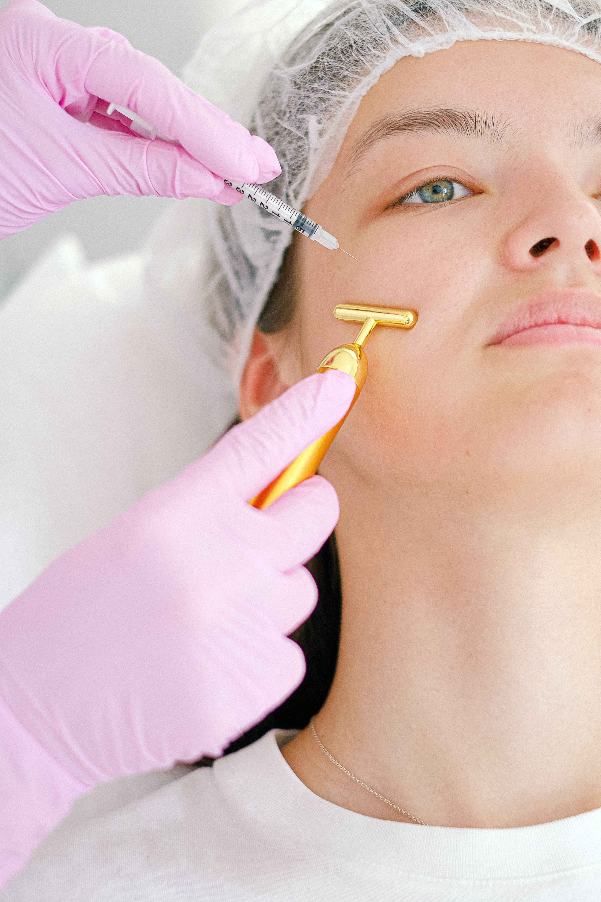

Mohaimin Ghani K.
Aug 9 ∙ 6 min read
Habits that helps to improve eyesight.

Eyes are comparable to Cameras. Eyes are far more complex, sophisticated, and rapid in Action. Like Cameras Eyes also have Lens in it which refines images. These Lenses can get affected by our Life-Style.
Certain Bad habits in day-to-day life cause severe damage to your Eye health. Don’t worry! You can easily substitute them.
As these eyes are small but a major part of our body and Life. It helps us to involve in the surrounding.
So Today! We have tried to cover some of the most curial points that can be good to improve Eyesight
-
Get a Proper Diet Plan.
Food is highly involved in Eye Health. Food can either improve eyesight or weaken your Vision. But It depends on what you eat in 24 hours and how often you eat.
Scientist believes in taking enough vitamins. These vitamins include Vitamin A, E, C, and most importantly Vitamin B complex. All these vitamins are essential to maintain good eye health.
Not long ago, the National Institute of Health discussed interesting News. Says that Studies have proven that eye health can get decline by 25 percent only if Vitamin C, E, and Zinc aren’t taken enough.
Also, a nutrient called Lutein. Which can be found in dark leafy green vegetables like Kale, Spinach, and Collard greens. This nutrient can lower the risk long term eye diseases.
So you can say that food has a huge impact on Eye-sights. We are responsible in case we didn’t make a good diet.
-
Reduce Screen Time.
Screen Time is taken as a term for activities performed in front of a screen. For example, Watching TV, Using a smartphone or computer.
According to experts Excess Screen time can be very problematic for kids and adults also. With a growing amount of time for computers and smartphones Eye health is very much affected.
“This Excess amount of time on screen can cause severe headache and eye strain, “says Dr.Marjan Moghaddam.
In most cases, this constantly staring causes dry eyes. The 2016 studies have shown us that children who spent most of their time on screens had developed more symptoms of dry eye.
So to create a healthy environment we can work on it reduce time on screen by adding certain time limits.
This will help definitely help one to improve eyesight.
-
Quit Smoking.
Smoking is a leading risk of early death and causes more than 8 million deaths per year. Most of these deaths are from India.
Smoking causes harm to every part of the body including Eyesight.
Studies show that smoking increases the risk of developing AMD by up to 4 times. AMD leads to permanent eye blindness and vision loss. Smoking increases the risk of cataracts up to 2 times.
While Smoking also enhances the risk of diabetes by up to 40 percent which later on can cause vision loss.
Not only active smokers are at risk. But also, passive smokers that live or spend time in the company of smokers are likely to be same at the risk.
Leaving such a habit will work to improve eyesight. So it’s better to quit smoking. As If once you quit such an extreme addiction, your visions will thank you for the rest of your life.
-
Maintain Blood Pressure.
High Blood pressure is a leading cause of the destruction in our body parts. Your vital organ is at serious risk if your blood pressure isn’t normal.
Normal blood pressure levels should be around 120/80 in adults of every age. If it gets high, it will not only disturb your vision but your whole body would be at a major risk.
High blood pressure can damage sensitive tissues of the retina. It can just damage a nerve because of the poor flow of blood. Any blockage in veins or arteries can cause dim vision, double vision, or maybe even worse vision loss.
Also, the damage caused by blood pressure can be reversible or maybe not. So be serious about your blood pressure.
-
Protect Eyes From High Radiations.
Protecting Your Eyes from the rays is as important as protecting to skin with sunscreen. The ultra-violet rays from the sun can cause a risk of Eye cancers including Eyelid.
More exposure to the sun can cause Photokeratitis. Photokeratitis is a temporary but sometimes very painful condition.
So for that experts have warned us about extreme exposure to any radiation. These radiations can cause many either Long term or Short term Issues.
It’s always better to a pair of sunglasses during sunny seasons. Try to invest a bit by buying a pair of sunglasses. This will provide valuable protection to your eyes.
-
Get Enough Sleep.
Getting a good night’s sleep is very effective for health.
Sleep play important role in healing eye cells. Sleep provides relaxation of muscles and Eye tissue, helping to work more efficiently.
For an Adult, it’s important to take at least 5 hours of sleep. While around 7 hours of Sleep for children. This will provide you get improved eyesight the next day.
In case, you’re not getting enough sleep, you may experience difficulties to process.
It may also cause dry eyes, itchy and bloodshot eyes. In the worse case, this will make your eyes become more sensitive to light. You may have blurry vision after it.
To have healthy eyes it’s better to sleep early at night so that on average you can have around 7 hours of sleep.
-
Take Exercise.
Exercises have always proven worthy for human health. To maintain good eye health, you need to be more cautious about your weight.
Obesity can cause severe damage to your eyes. Obesity has always been problematic. So it’s better to work at it.
So, it’s better to perform running exercises. As it lowers cholesterol levels in the body. Which can be helpful in circulating blood in a more effective way. It provides essential hormones very keep your body sound.
Other than that there are some other small exercises which can be effective to improve eyesight.
These exercises include rolling eyes. For which you have to gently move eyes in one direction and then make their way back.
Another great exercise is palming the eyes. Which helps to circulate blood through the eyes properly. Also, a warm piece of cloth is gently rubbed on the eyes.
These techniques will reduce stress and relax your eye muscles. In short, it will improve the health of your Eye.
Performing these techniques on daily basis will improve your Eye-Sight back to 6-by-6.
-
Knowing Your Allergies.
Last but not least is an allergy, which can be sometimes really irritating. So it’s best to know which environmental agent causes allergy to you. For many people, it’s common to show allergic reactions toward pollen grains.
Many people around the globe ignore the fact that allergies cause eye damage. They didn’t like to accept that any Allergen can cause severe damage in the way to improve eyesight.
For the most part, allergies cause rubbing which can lead to redness or eye soar.
Some of the most common among these can be airborne allergens like pollen, dust, mites, pet dander, and mold.
So it’s better to know what can cause your allergy. Then try to stay apart from it.
The Bottom Line.
The above-mentioned point explains all the important habits which are medically accepted. So, it’s better to absorb something from this article by starting today.
It should be kept in mind that the Eyes enable us to do many things in life. It’s our responsibility to take good care of our peepers.
So take a step in the right direction and start with any of our habits.
Hope you find this article interesting. Keep Smiling.
Mohaimin Ghani K.
Mohaimin Ghani K: Creator. Writer. Gamer. | Writing: Life, Self, Marketing, Gaming, Health & Technology. | Hire me to create content that works for you.
More article...

10 little behaviours that attract people to you
Last updated 3 mins ago
10 little behaviours that attract people to you
Last updated 3 mins ago
Mohaimin Ghani K: Creator. Writer. Gamer. | Writing: Life, Self, Marketing, Gaming, Health & Technology. | Hire me to create content that works for you.
More article...
10 little behaviours that attract people to you
Last updated 3 mins ago
10 little behaviours that attract people to you
Last updated 3 mins ago